How to record a plot from start to finish. Field helpers use the Lite app; project teams use the full app to manage plots, check data and report.
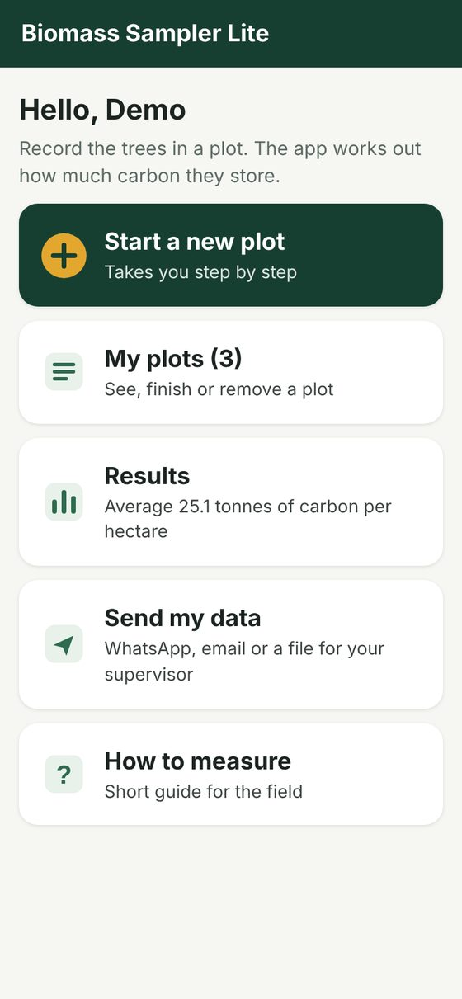
The home screen has five big buttons: start a new plot, see your plots, results, send your data, and a short field guide.
💡 Add the app to the phone’s home screen (browser menu → Add to Home screen). It then opens like a normal app and works offline.
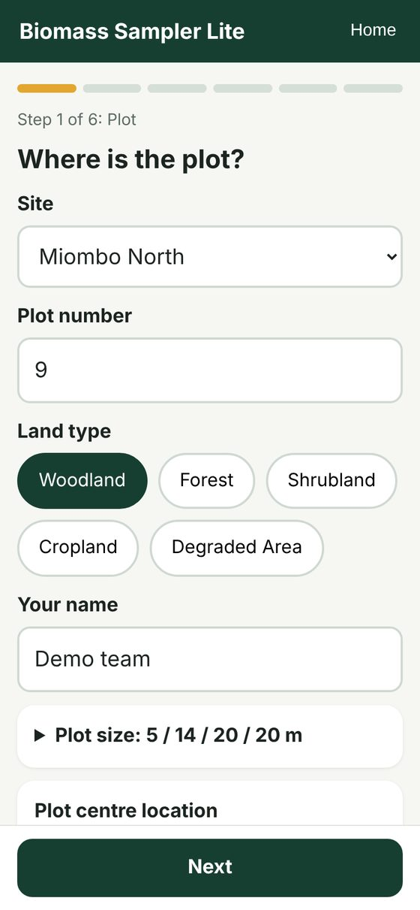
Choose the site (or add another), type the plot number, tap the land type and check your name.
Plot size shows the radius of each circle. The standard is 5 / 14 / 20 / 20 m. Open it to type other sizes if your project uses them.
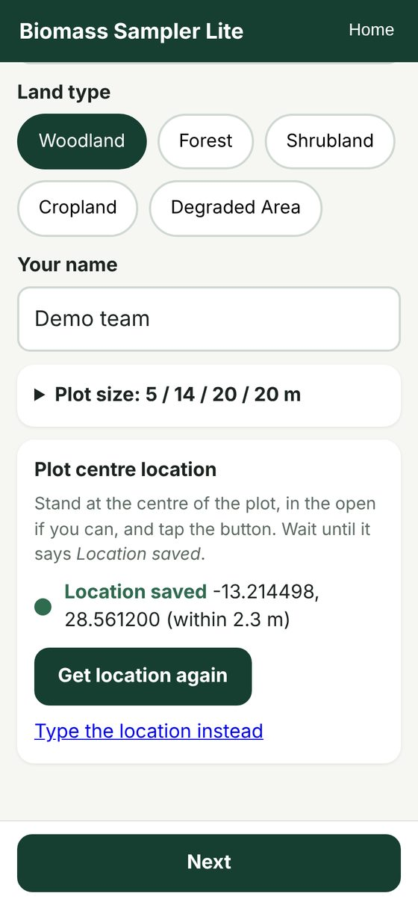
Stand at the centre stick, in the open if you can, and tap Get my location. The app waits for ±4 m or better, averages five readings and says Location saved.
💡 No signal under the canopy? After 20 seconds a Use it anyway button appears, and you can also type the coordinates in.
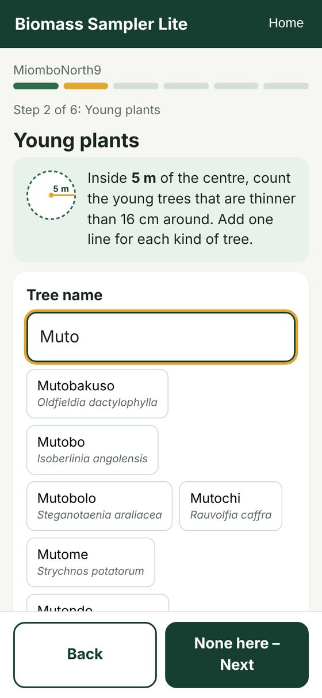
Inside 5 m of the centre, count the young trees thinner than 16 cm around the trunk. Type the tree name, pick it from the suggestions, set How many with − and +, then tap Add.
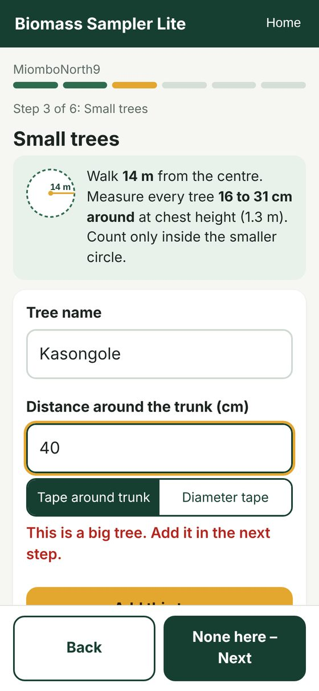
Measure every tree 16–31 cm around the trunk at chest height (1.3 m) inside 14 m. Type the tape reading and tap Add this tree.
If a tree is too big or too small for this step, the app says where it belongs.
💡 Using a diameter tape? Tap Diameter tape and type the width instead.
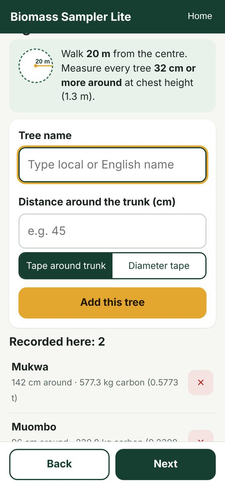
Measure every tree 32 cm or more around inside 20 m. Each tree shows its carbon in kilograms and tonnes as soon as it is added. Tap × to remove a mistake.
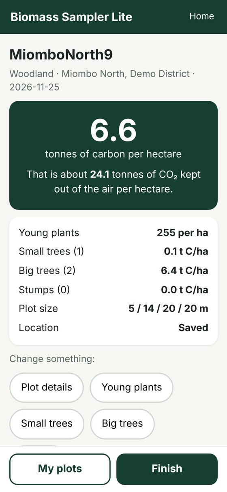
After the stumps step you see the plot result: tonnes of carbon per hectare, tonnes of CO₂, and the breakdown by young plants, small trees, big trees and stumps.
Use Change something to go back to any step.
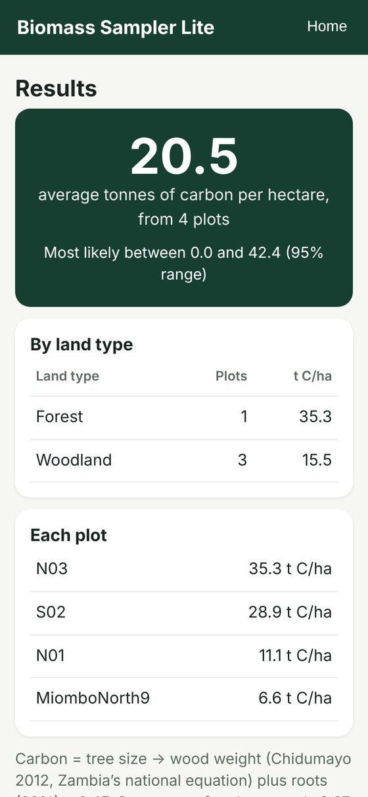
Results shows the average of all your plots with its likely range, an average for each land type, and each plot’s value.
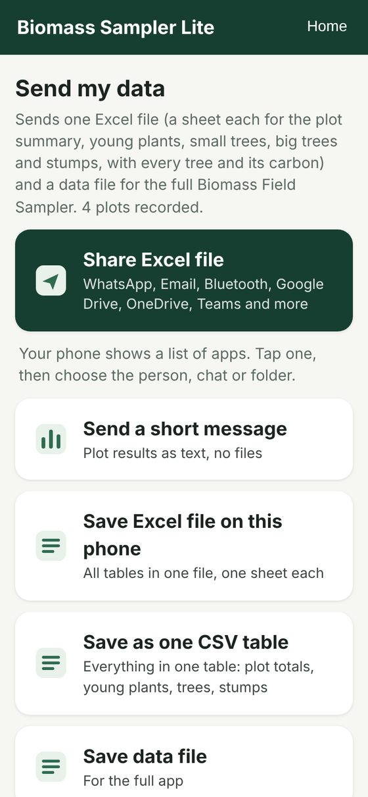
Tap Share Excel file. On an iPhone, the share list opens with the Excel workbook attached. On Android, the Excel file is saved first, then sent from the Files app (Android does not let web apps share Excel files directly).
The supervisor opens the data file in the full app: Export & settings → Restore / merge backup.
💡 Send your data at the end of every field day. It is also your backup.
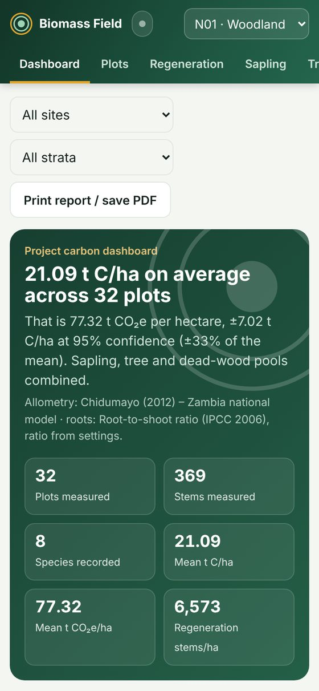
The app opens on the dashboard: mean t C/ha with its 95% confidence interval, plots and stems measured, species, t CO₂e/ha and regeneration. You can filter by site and stratum, and Print report saves it as a PDF.
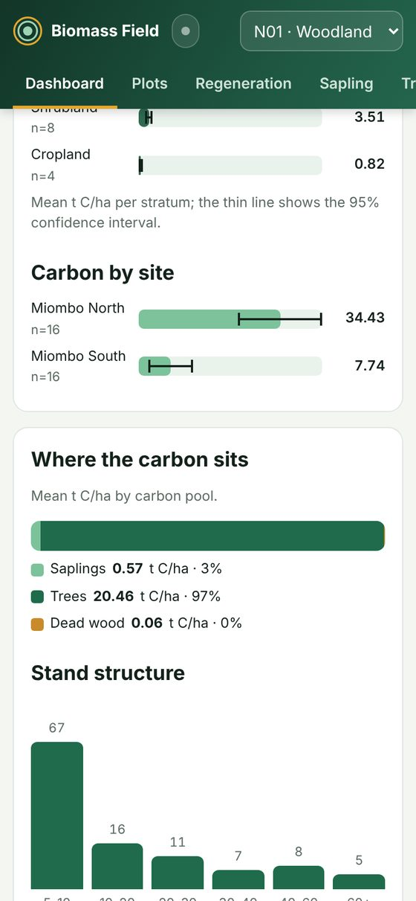
Bars show the mean t C/ha for each stratum and site, with the 95% confidence interval as a thin line. Further down are the carbon pools, stand structure, a map of plot centres and the top species by carbon.
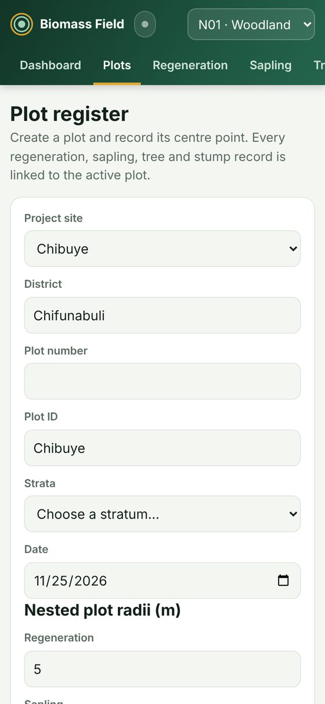
Under Plots, choose the site (or + Add new site…), the plot number and the stratum. Record the centre with Use GPS, or paste coordinates. Check the nested plot radii and, if needed, choose a different allometric model for this plot.
💡 The plot you save becomes the active plot. Every record you add next is linked to it.
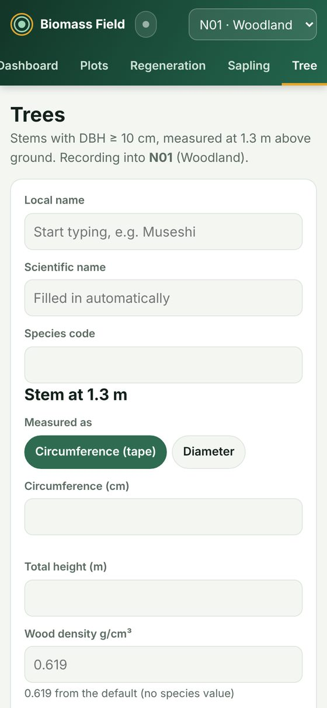
Type the local, English or scientific name and pick it from the list. The scientific name and wood density fill in automatically. Enter the tape reading as circumference or diameter, and the height if your model uses it.
Regeneration, Sapling, Tree and Stump each have their own tab, with Edit, Delete and Undo for every record.
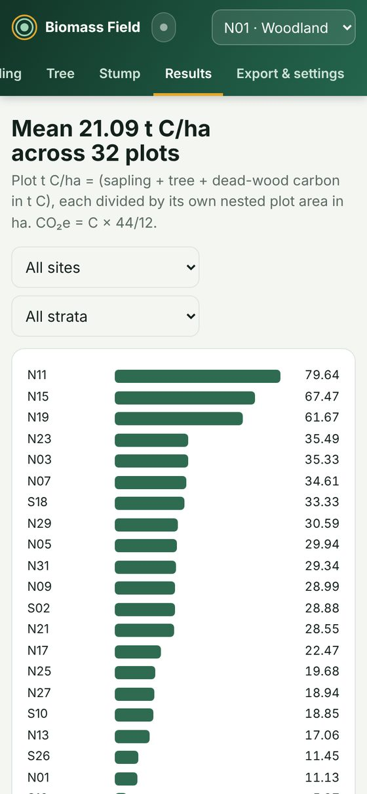
Plot results with t C/ha for each pool, filters, and averages by stratum and site with confidence intervals.
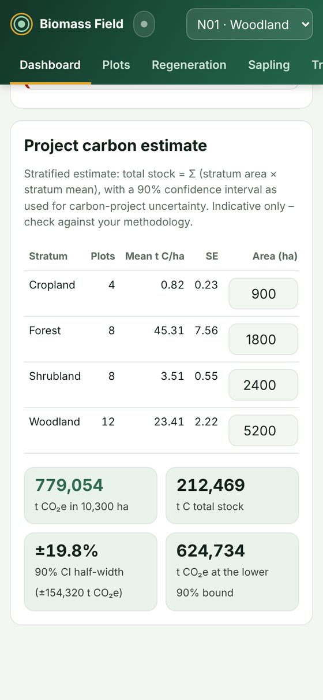
Enter the area of each stratum to get the total stock in t C and t CO₂e, with a 90% confidence interval and a conservative lower bound. Data quality checks flag missing coordinates, poor GPS accuracy, trees in the wrong size class, unusual heights and stems outside a model’s range.
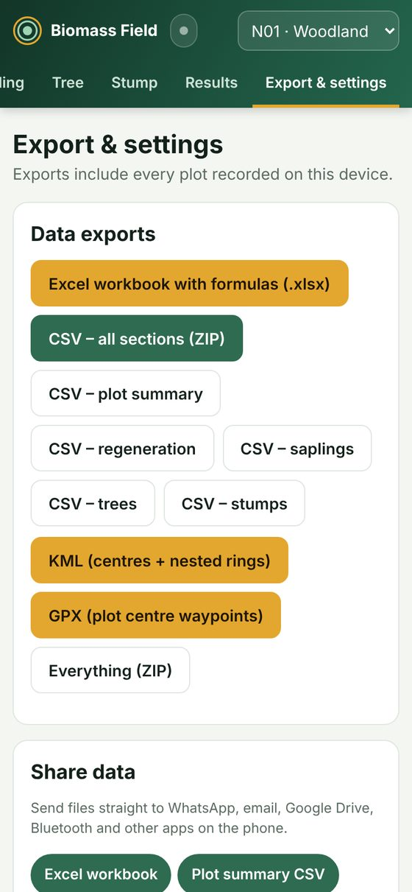
Export an Excel workbook with live formulas, CSV files for each section, KML for Google Earth and GPX for GPS units. Share data sends files to WhatsApp, email or Drive.
Automatic backup to Google Drive or OneDrive can be switched on here too, along with settings such as the default model, carbon fraction and required GPS accuracy.
From the plot centre: young plants within 5 m, saplings (DBH 5–9.9 cm, 16–31 cm around) within 14 m, trees (DBH ≥ 10 cm, 32 cm or more around) within 20 m, and stumps within 20 m. Radii can be changed for each plot.
Measure at 1.3 m above the ground, on the uphill side on slopes. A tree that forks below 1.3 m is recorded as one tree per stem. For stumps, measure the size at the top and the height.
Stand at the centre stick in the open where possible, and wait for the required accuracy. Plots saved with a weaker fix are flagged so they can be re-measured.
Check the plot results, then share or back up your data. In the full app, look through the data quality checks before leaving the site.